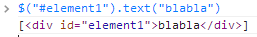
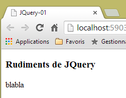
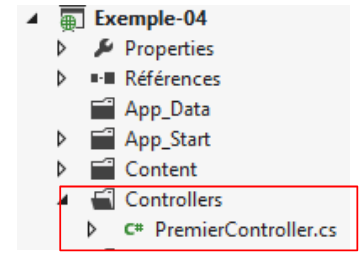
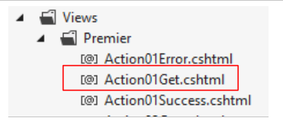
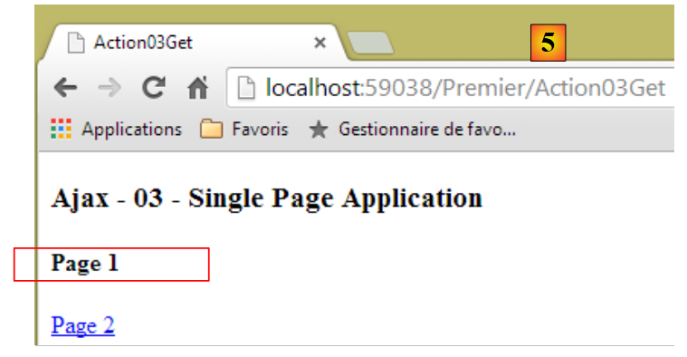
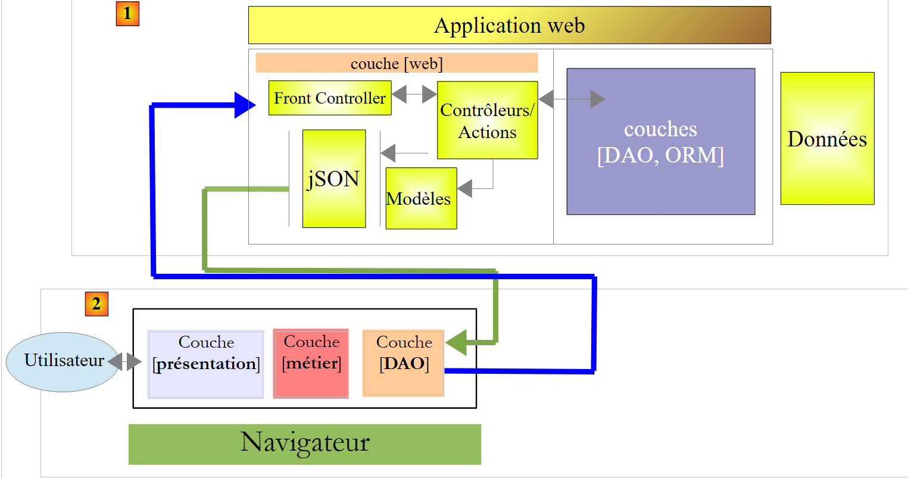
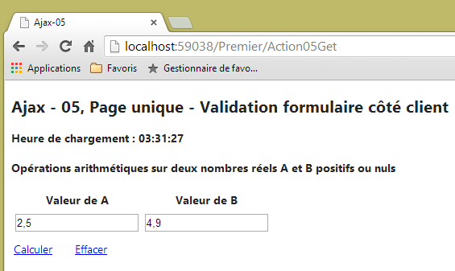

7. Ajaxifying an ASP.NET MVC application
7.1. The Role of AJAX in a Web Application
For now, the learning examples we’ve studied have the following architecture:
 |
To switch from a view [View1] to a view [View2], the browser:
- sends a request to the web application;
- receives the view [View2] and displays it in place of the view [View1].
This is the classic pattern:
- request from the browser;
- the web server generates a view in response to the client;
- display of this new view by the browser.
There is another mode of interaction between the browser and the web server: AJAX (Asynchronous JavaScript and XML). This involves interactions between the view displayed by the browser and the web server. The browser continues to do what it does best—display an HTML view—but it is now controlled by JavaScript embedded within the displayed HTML view. The process is as follows:
 |
- in [1], an event occurs on the page displayed in the browser (click on a button, change in text, etc.). This event is intercepted by JavaScript (JS) embedded in the page;
- at [2], the JavaScript code makes an HTTP request just as the browser would have done. The request is asynchronous: the user can continue to interact with the page without being blocked while waiting for the HTTP response. The request follows the standard processing flow. Nothing (or very little) distinguishes it from a standard request;
- In [3], a response is sent to the JavaScript client. Rather than a complete HTML view, it is typically a partial HTML view, an XML feed, or JSON (JavaScript Object Notation) that is sent;
- In [4], JavaScript retrieves this response and uses it to update a region of the displayed HTML page.
For the user, there is a change in the view because what they see has changed. However, there is no full page reload; instead, only a partial modification of the displayed page occurs. This helps make the page more fluid and interactive: because there is no full page reload, we can handle events that previously could not be managed. For example, offering the user a list of options as they type characters into an input field. With each new character typed, an AJAX request is sent to the server, which then returns additional suggestions. Without AJAX, this kind of input assistance was previously impossible. We couldn’t reload a new page with every character typed.
7.2. Basics of jQuery and JavaScript
We have often included the jQuery JavaScript library in our pages. For example, you’ll find the following line:
<script type="text/javascript" src="~/Scripts/jquery-1.8.2.min.js"></script>
Note: Match the jQuery version to your version of Visual Studio.
ASP.NET MVC’s Ajax technology uses jQuery. We will write some jQuery scripts ourselves. So let’s now cover the basics of jQuery you need to know to understand the scripts in this chapter.
We create a new project [Example-04] within our [Examples] solution:
 |
To use Ajax with ASP.NET MVC, the following line must be present in the configuration file [Web.config] [1]:
<appSettings>
...
<add key="UnobtrusiveJavaScriptEnabled" value="true" />
</appSettings>
Line 3 enables the use of Ajax in ASP.NET views. It is present by default.
We create an HTML file [JQuery-01.html] in the [Content] folder of the new project [2]:
 |
This file will have the following content:
<!DOCTYPE html>
<html xmlns="http://www.w3.org/1999/xhtml">
<head>
<meta http-equiv="Content-Type" content="text/html; charset=utf-8" />
<title>JQuery-01</title>
<script type="text/javascript" src="/Scripts/jquery-1.8.2.min.js"></script>
</head>
<body>
<h3>JQuery Basics</h3>
<div id="element1">
Element 1
</div>
</body>
</html>
- Line 6: Importing jQuery (adjust the version to match your version of Visual Studio);
- Lines 10–12: a page element with the ID [element1]. We’ll be working with this element.
View this file in the Google Chrome browser [4] and [5]:
 |
In Google Chrome, press [Ctrl-Shift-I] to open the developer tools [6]. The [Console] tab [7] allows you to run JavaScript code. Below, we provide JavaScript commands to type and explain what they do.
JS | result |
|
: returns the collection of all elements with the ID [element1], so normally a collection of 0 or 1 element because you cannot have two identical IDs on an HTML page. |  |
|
: sets the text [blabla] for all elements in the collection. This changes the content displayed on the page |   |
|
hides the elements in the collection. The text [blabla] is no longer displayed. |   |
|
: displays the collection again. This allows us to see that the element with the ID [element1] has the CSS attribute style='display: none;', which causes the element to be hidden. |  |
|
: displays the elements of the collection. The text [blabla] appears again. The CSS attribute style='display: block;' is responsible for this display. |   |
|
: Sets an attribute on all elements in the collection. The attribute here is [style] and its value is [color: red]. The text [blabla] turns red. |   |
 | |
 |
Note that the browser’s URL did not change during all these operations. There was no communication with the web server. Everything happens within the browser. Now, let’s view the page’s source code:

<!DOCTYPE html>
<html xmlns="http://www.w3.org/1999/xhtml">
<head>
<meta http-equiv="Content-Type" content="text/html; charset=utf-8" />
<title>JQuery-01</title>
<script type="text/javascript" src="/Scripts/jquery-1.8.2.min.js"></script>
</head>
<body>
<h3>JQuery Basics</h3>
<div id="element1">
Element 1
</div>
</body>
</html>
This is the initial text. It does not reflect the changes made to the element in lines 10–12. It is important to remember this when debugging JavaScript. In such cases, it is often unnecessary to view the source code of the displayed page. To view the source code of the currently displayed page, proceed as follows:

We now know enough to understand the JS scripts that follow.
7.3. Updating a page with an HTML feed
7.3.1. The Views
We will examine the following application:
 |
- in [1], the page load time;
- in [2], we perform the four arithmetic operations on two real numbers A and B;
- at [3], the server’s response is displayed in a region of the page;
- in [4], the time of the calculation. This is different from the page load time [5]. The latter is equal to [1], showing that region [6] has not been reloaded. Furthermore, the page’s URL [7] has not changed.
7.3.2. The controller, the actions, the model, the view
We create a controller named [Premier]:
 |
To display the initial view, we create the following [Action01Get] action:
[HttpGet]
public ViewResult Action01Get()
{
ViewModel01 model = new ViewModel01();
model.LoadTime = DateTime.Now.ToString("hh:mm:ss");
return View(model);
}
- line 4: instantiation of the view model;
- line 5: initialization of the view's load time;
- line 6: display of the view [Action10Get.cshtml] and its model.
The model [ ViewModel01 ] is as follows:
 |
using System;
using System.ComponentModel.DataAnnotations;
using System.Web.Mvc;
namespace Example_04.Models
{
[Bind(Exclude = "AplusB, AminusB, AmultipliedByB, AdividedByB, Error, LoadTime, CalculationTime")]
public class ViewModel01
{
// form
[Required(ErrorMessage="Required field")]
[Display(Name="Value of A")]
[Range(0, Double.MaxValue, ErrorMessage = "Enter a positive number or zero")]
public double A { get; set; }
[Required(ErrorMessage = "Required")]
[Display(Name = "Value of B")]
[Range(0, Double.MaxValue, ErrorMessage="Enter a positive number or zero")]
public double B { get; set; }
// results
public string AplusB { get; set; }
public string AminusB { get; set; }
public string AMultipliedByB { get; set; }
public string AdividedbyB { get; set; }
public string Error { get; set; }
public string LoadTime { get; set; }
public string CalculationTime { get; set; }
}
}
- lines 11–14: the value A from the form;
- lines 15–18: the value B from the form;
- lines 21–24: the results of the four arithmetic operations on A and B;
- line 25: the text of any error;
- line 26: the time the view was loaded in the browser;
- line 27: the time the fields in lines 21–24 were calculated;
- line 7: this view template is also an action template. Fields that are not submitted by the browser are excluded from the latter.
The view [Action01Get.cshtml] is as follows:
 |
@model Example_04.Models.ViewModel01
@{
Layout = null;
AjaxOptions ajaxOpts = new AjaxOptions
{
UpdateTargetId = "results",
HttpMethod = "post",
Url = Url.Action("Action01Post"),
LoadingElementId = "loading",
LoadingElementDuration = 1000
};
}
<!DOCTYPE html>
<html lang="fr-FR">
<head>
<meta name="viewport" content="width=device-width" />
<title>Ajax-01</title>
<link rel="stylesheet" href="~/Content/Site.css" />
<script type="text/javascript" src="~/Scripts/jquery-1.8.2.min.js"></script>
<script type="text/javascript" src="~/Scripts/jquery.validate.min.js"></script>
<script type="text/javascript" src="~/Scripts/jquery.validate.unobtrusive.min.js"></script>
<script type="text/javascript" src="~/Scripts/globalize/globalize.js"></script>
<script type="text/javascript" src="~/Scripts/globalize/cultures/globalize.culture.fr-FR.js"></script>
<script type="text/javascript" src="~/Scripts/globalize/cultures/globalize.culture.en-US.js"></script>
<script type="text/javascript" src="~/Scripts/jquery.unobtrusive-ajax.js"></script>
<script type="text/javascript" src="~/Scripts/myScripts-01.js"></script>
</head>
<body>
<h2>Ajax - 01</h2>
<p><strong>Load time: @Model.LoadTime</strong></p>
<h4>Arithmetic operations on two real numbers A and B that are positive or zero</h4>
@using (Ajax.BeginForm("Action01Post", null, ajaxOpts, new { id = "form" }))
{
<table>
<thead>
<tr>
<th>@Html.LabelFor(m => m.A)</th>
<th>@Html.LabelFor(m => m.B)</th>
</tr>
</thead>
<tbody>
<tr>
<td>@Html.TextBoxFor(m => m.A)</td>
<td>@Html.TextBoxFor(m => m.B)</td>
</tr>
<tr>
<td>@Html.ValidationMessageFor(m => m.A)</td>
<td>@Html.ValidationMessageFor(m => m.B)</td>
</tr>
</tbody>
</table>
<p>
<input type="submit" value="Calculate" />
<img id="loading" style="display: none" src="~/Content/images/indicator.gif" />
<a href="javascript:postForm()">Calculate</a>
</p>
}
<hr />
<div id="results" />
</body>
</html>
- line 1: the view is based on a [ViewModel01] type;
- line 21: jQuery is required for both validation and Ajax;
- lines 22–23: the validation libraries;
- lines 24–26: the internationalization libraries;
- line 27: the Ajax library;
- line 28: a local JavaScript library;
- line 33: displays the view load time;
- line 35: an Ajax form—we’ll come back to this;
- lines 40–41: labels for the A and B number inputs;
- lines 46–47: input fields for numbers A and B;
- lines 50-51: error messages for the A and B number inputs;
- line 56: the button that submits the form. This will be submitted via an Ajax request;
- line 57: a loading image displayed during the Ajax request;
- line 58: a link to submit the form with an Ajax request;
- line 62: a div tag with the id [results]. This is where we will place the HTML output returned by the web server.
This view displays the following page:

Now let’s examine the code that handles the form’s Ajax functionality:
...
@{
Layout = null;
AjaxOptions ajaxOpts = new AjaxOptions
{
UpdateTargetId = "results",
HttpMethod = "post",
Url = Url.Action("Action01Post"),
LoadingElementId = "loading",
LoadingElementDuration = 1000
};
}
...
@using (Ajax.BeginForm("Action01Post", null, ajaxOpts, new { id = "form" }))
{
....
<p>
<input type="submit" value="Calculate" />
<img id="loading" style="display: none" src="~/Content/images/indicator.gif" />
<a href="javascript:postForm()">Calculate</a>
</p>
}
...
<div id="results" />
- Line 15: Instead of using [@Html.BeginForm], we use [@Ajax.BeginForm]. This method supports many overloads. The one used has the following signature:
Ajax.BeginForm(string ActionName, RouteValueDictionary routeValues, AjaxOptions ajaxOptions, IDictionary<string,object> htmlAttributes)
Here, we use the following actual parameters:
Action01Post: the name of the action that will process the form's POST request,
null: there is no route information to provide,
ajaxOpts: the options for the Ajax call. They were defined on lines 6–10,
new { id = "form" }: to assign the [id='form'] attribute to the generated <form> tag;
The Ajax options used are as follows:
- line 8: the target URL of the Ajax HTTP request;
- line 7: method of the Ajax HTTP request;
- line 6: ID of the page region that will be updated by the response to the Ajax request;
- line 9: the ID of the page region that will be displayed during the Ajax request—usually a loading image. Here, line 20 will be displayed. It contains an animated image symbolizing a loading state. Initially, this image is hidden by the [display: none] style;
- line 10: wait time in milliseconds before the animated image is displayed, here 1 second.
The HTML code generated by the Ajax form is as follows:
<form action="/Premier/Action01Post" data-ajax="true" data-ajax-loading="#loading" data-ajax-loading-duration="1000" data-ajax-method="post" data-ajax-mode="replace" data-ajax-update="#results" data-ajax-url="/Premier/Action01Post" id="form" method="post"> <table>
...
<p>
<input type="submit" value="Calculate" />
<img id="loading" style="display: none" src="/Content/images/indicator.gif" />
<a href="javascript:postForm()">Calculate</a>
</p>
</form>
<hr />
<div id="results" />
- line 1: the generated <form> tag. Note the [data-ajax-attr] attributes, which reflect the values of the fields in the [AjaxOptions] object associated with the Ajax request. These attributes are managed by the Ajax library. Without them, the <form> tag becomes:
<form action="/Premier/Action01Post" id="form" method="post">
...
<p>
<input type="submit" value="Calculate" />
<img id="loading" style="display: none" src="/Content/images/indicator.gif" />
<a href="javascript:postForm()">Calculate</a>
</p>
</form>
This is a standard HTML form. This code will be executed if the user disables JavaScript in their browser. Lines 5–6 are then unused.
7.3.3. The [Action01Post] action
The [Action01Post] action that handles the Ajax HTTP request is as follows:
[HttpPost]
public PartialViewResult Action01Post(FormCollection postedData, SessionModel session)
{
// simulation wait
Thread.Sleep(2000);
// instantiate the action model
ViewModel01 model = new ViewModel01();
// calculation time
model.CalculationTime = DateTime.Now.ToString("hh:mm:ss");
// Update the model
TryUpdateModel(model, postedData);
if (!ModelState.IsValid)
{
// return an error
model.Error = getErrorMessagesFor(ModelState);
return PartialView("Action01Error", model);
}
// Every other time, we simulate an error
int val = session.Randomizer.Next(2);
if (val == 0)
{
model.Error = "[random error]";
return PartialView("Action01Error", model);
}
// calculations
model.AplusB = string.Format("{0}", model.A + model.B);
model.AminusB = string.Format("{0}", model.A - model.B);
model.AMultipliedByB = string.Format("{0}", model.A * model.B);
template.A/B = string.Format("{0}", template.A / template.B);
// view
return PartialView("Action01Success", template);
}
- line 1: the action only handles a [POST];
- line 2: it accepts the following action model:
- [FormCollection postedData]: the set of values posted by the Ajax POST request,
- [SessionModel session]: the session elements. Here, we use a technique described in section 4.10;
- line 2: the action will return an HTML fragment rather than a complete HTML page;
- line 5: artificially, we pause for two seconds to simulate a long Ajax action;
- line 7: a model of type [ViewModel01] is instantiated;
- line 9: the calculation time is initialized;
- line 11: we attempt to update the [ViewModel01] model with the posted values. Recall that there are two: the values of the numbers A and B;
- line 12: we check whether this update was successful;
- line 15: if an error occurs, the [Error] field of the model is populated;
- line 16: a partial view [Action01Error.cshtml] using the [ViewModel01] model is rendered;
- lines 19–24: every other time, an error is simulated;
- line 19: a random integer is generated in the range [0,1]. The random number generator is taken from the session;
- line 20: if the generated value is 0, an error is simulated;
- line 22: the error message is placed in the model;
- line 23: a partial view [Action01Error.cshtml] using the model [ViewModel01] is rendered;
- lines 26–29: arithmetic calculations on the numbers A and B are performed, and the results are placed in the view model as strings;
- line 31: a partial view [Action01Success.cshtml] is rendered using the model [ViewModel01];
7.3.4. The [Action01Error] view
The view [Action01Error.cshtml] is as follows:
@model Example_04.Models.ViewModel01
<h4>Results</h4>
<p><strong>Calculation time: @Model.CalculationTime</strong></p>
<p style="color: red;">An error occurred: @Model.Error</p>
Note that this partial HTML will be sent in response to the POST-type Ajax HTTP request and placed on the page in the region with the id [results]. All this information comes from the Ajax configuration used in the main page [Action01Get.cshtml]:
@model Example_04.Models.ViewModel01
@{
Layout = null;
AjaxOptions ajaxOpts = new AjaxOptions
{
UpdateTargetId = "results",
HttpMethod = "post",
Url = Url.Action("Action01Post"),
LoadingElementId = "loading",
LoadingElementDuration = 1000
};
}
Here is an example of a response with an error:

7.3.5. The [Action01Success] view
The [Action01Success.cshtml] view is as follows:
@model Example_04.Models.ViewModel01
<h4>Results</h4>
<p><strong>Calculation time: @Model.HeureCalcul</strong></p>
<p>Grade:B=@Model.AplusB</p>
<p>A-B=@Model.AmoinsB</p>
<p>A*B=@Model.AmultipliéparB</p>
<p>A/B=@Model.AdiviséparB</p>
Once again, this partial HTML stream will be sent in response to the POST-type Ajax HTTP request and placed on the page in the region with the id [results]:

7.3.6. G ession Management
We saw that [Action01Post] uses the session. The session model is the following [SessionModel] type:
using System;
namespace Example_03.Models
{
public class SessionModel
{
public Random Randomizer { get; set; }
}
}
The session is initialized in [Global.asax]:
// Session
protected void Session_Start()
{
SessionModel sessionModel = new SessionModel();
sessionModel.Randomizer = new Random(DateTime.Now.Millisecond);
Session["data"] = sessionModel;
}
The session is associated with a model in [Application_Start]:
protected void Application_Start()
{
...
// model binders
ModelBinders.Binders.Add(typeof(SessionModel), new SessionModelBinder());
}
The [SessionModelBinder] class has been described.
7.3.7. Managing the placeholder image
@model Example_04.Models.ViewModel01
@{
Layout = null;
AjaxOptions ajaxOpts = new AjaxOptions
{
...
LoadingElementId = "loading",
LoadingElementDuration = 1000
};
}
...
<body>
...
@using (Ajax.BeginForm("Action01Post", null, ajaxOpts, new { id = "form" }))
{
...
<p>
<input type="submit" value="Calculate" />
<img id="loading" style="display: none" src="~/Content/images/indicator.gif" />
<a href="javascript:postForm()">Calculate</a>
</p>
}
...
When the Ajax request starts, the region with id [loading] on line 7 is displayed after one second [line 8]. This region is the image from line 21, which was initially hidden. This results in the following interface:
 |
7.3.8. Handling the [Calculate] link
Let’s examine the [Calculate] link on the main page [Action01Get.cshtml]:
<head>
<meta name="viewport" content="width=device-width" />
<title>Ajax-01</title>
...
<script type="text/javascript" src="~/Scripts/myScripts-01.js"></script>
</head>
<body>
<h2>Ajax - 01</h2>
<p><strong>Load time: @Model.LoadTime</strong></p>
<h4>Arithmetic operations on two real numbers A and B that are positive or zero</h4>
@using (Ajax.BeginForm("Action01Post", null, ajaxOpts, new { id = "form" }))
{
...
<p>
<input type="submit" value="Calculate" />
<img id="loading" style="display: none" src="~/Content/images/indicator.gif" />
<a href="javascript:postForm()">Calculate</a>
</p>
}
<hr />
<div id="results" />
- line 18: clicking the [Calculate] link triggers the execution of the JS function [postForm]. This function is defined in the [myScripts-01.js] file on line 5. The script is as follows:
 |
function postForm () {
// We make a manual Ajax call using jQuery
var loading = $("#loading");
var form = $("#form");
var results = $('#results');
$.ajax({
url: '/First/Action01Post',
type: 'POST',
data: form.serialize(),
dataType: 'html',
begin: loading.show(),
success: function (data) {
loading.hide()
results.html(data);
}
})
}
// http://blog.instance-factory.com/?p=268
$.validator.methods.number = function (value, element) {
return this.optional(element) ||
!isNaN(Globalize.parseFloat(value));
}
$.validator.methods.date = function (value, element) {
return this.optional(element) ||
!isNaN(Globalize.parseDate(value));
}
jQuery.extend(jQuery.validator.methods, {
range: function (value, element, param) {
//Use the Globalization plugin to parse the value
var val = Globalize.parseFloat(value);
return this.optional(element) || (
val >= param[0] && val <= param[1]);
}
});
The functions in lines 19–37 were already covered in Section 6.1. They handle the internationalization of the pages. We will not revisit them here. In lines 1–17, we manually make the Ajax call, which in the case of the [Calculate] button was previously handled by the project’s Ajax library. For this, we use the project’s jQuery library.
- Line 3: a reference to the component with the ID [loading]. [$("#loading")] returns the collection of elements with the ID [loading]. There is only one;
- Line 4: A reference to the component with the ID [form];
- line 5: a reference to the component with the id [results];
- Line 6: The Ajax call with its options;
- line 7: the target URL of the Ajax call;
- line 8: the HTTP method used;
- line 9: the posted data. [form.serialize] creates the POST string [A=val1&B=val2] for the form with id [form];
- line 10: the expected data type in the response. We know that the server will return an HTML stream;
- line 11: the method to execute when the request starts. Here, we specify that the component with the ID [loading] should be displayed. This is the animated loading image;
- line 12: the method to execute if the Ajax request is successful. The [data] parameter is the complete response from the server. We know this is an HTML stream;
- line 13: we hide the loading indicator;
- line 14: we update the component with the ID [results] with the HTML from the [data] parameter.
The reader is invited to test the [Calculate] link. It functions just like the [Calculate] button, with the exception of the error message " ." Once this link has been used, invalid values can then be entered for A and B:
 |
- in [1] and [2], we entered invalid values. They are flagged by the client-side validators;
- in [3], we clicked the [Calculate] link;
- in [4], a [POST] occurred since we receive the response [4].
When the values are invalid and we click the [Calculate] button, the [POST] request to the server does not occur. In the same scenario, using the [Calculate] link triggers the [POST] request to the server. There is therefore a behavior of the [Calculate] button that we were unable to reproduce with the [Calculate] link. Rather than trying to solve this problem now, we will leave it for a later example that will also illustrate another client-side validation issue.
7.4. Updating an HTML page with a JSON feed
In the previous example, the web server responded to the Ajax HTTP request with an HTML stream. This stream contained data accompanied by HTML formatting. We will revisit the previous example, this time using JSON (JavaScript Object Notation) responses that contain only the data. The advantage is that fewer bytes are transmitted.
7.4.1. The [Action02Get] action
The [Action02Get] action will be the entry point for the new application. Its code is as follows:
@model Example_04.Models.ViewModel02
@{
Layout = null;
AjaxOptions ajaxOpts = new AjaxOptions
{
HttpMethod = "post",
Url = Url.Action("Action02Post"),
LoadingElementId = "loading",
LoadingElementDuration = 1000,
OnBegin = "OnBegin",
OnFailure = "OnFailure",
OnSuccess = "OnSuccess",
OnComplete = "OnComplete"
};
}
<!DOCTYPE html>
<html lang="fr-FR">
<head>
<meta name="viewport" content="width=device-width" />
<title>Ajax-02</title>
....
<script type="text/javascript" src="~/Scripts/myScripts-02.js"></script>
</head>
<body>
<h2>Ajax - 02</h2>
<p><strong>Load time: @Model.LoadTime</strong></p>
<h4>Arithmetic operations on two real numbers A and B that are positive or zero</h4>
@using (Ajax.BeginForm("Action02Post", null, ajaxOpts, new { id = "form" }))
{
...
<p>
<input type="submit" value="Calculate" />
<img id="loading" style="display: none" src="~/Content/images/indicator.gif" />
<a href="javascript:postForm()">Calculate</a>
</p>
}
<hr />
<div id="entete">
<h4>Results</h4>
<p><strong>Calculation time: <span id="calculationTime"/></strong></p>
</div>
<div id="results">
<p>A+B=<span id="AplusB"/></p>
<p>A-B=<span id="AminusB"/></p>
<p>A*B=<span id="AmultipliedbyB"/></p>
<p>A/B=<span id="AdividedbyB"/></p>
</div>
<div id="error">
<p style="color: red;">An error has occurred: <span id="msg"/></p>
</div>
</body>
</html>
- lines 4–14: the Ajax call options;
- line 10: the JS function to execute when the request starts. This function is defined in the JS file referenced on line 24;
- line 11: the JS function to execute if the request fails;
- line 12: the JS function to execute if the request succeeds;
- line 13: the JS function to execute after the Ajax request has returned its result (failure or success);
- lines 40–43: a region with the ID [header];
- lines 44–49: a region with the ID [results]. It will display the results of the four arithmetic operations;
- lines 50–52: an id region [error]. It will display any error messages.
7.4.2. The [Action02Post] action
The Ajax request is handled by the following [Action02Post] action:
[HttpPost]
public JsonResult Action02Post(FormCollection postedData, SessionModel session)
{
// simulation wait
Thread.Sleep(2000);
// model validation
ViewModel02 model = new ViewModel02();
// loading and calculation times
string LoadTime = DateTime.Now.ToString("hh:mm:ss");
string CalculationTime = DateTime.Now.ToString("hh:mm:ss");
// Update the model
TryUpdateModel(model, postedData);
if (!ModelState.IsValid)
{
// return an error
return Json(new { Error = getErrorMessagesFor(ModelState), CalculationTime = CalculationTime });
}
// Every other time, we simulate an error
int val = session.Randomizer.Next(2);
if (val == 0)
{
// return an error
return Json(new { Error = "[random error]", CalculationTime = CalculationTime });
}
// calculations
string AplusB = string.Format("{0}", model.A + model.B);
string AminusB = string.Format("{0}", model.A - model.B);
string AMultipliedByB = string.Format("{0}", model.A * model.B);
string AdividedbyB = string.Format("{0}", template.A / template.B);
// return the results
return Json(new { Error = "", AplusB = AplusB, AminusB = AminusB, AmultipliedbyB = AmultipliedbyB, AdividedbyB = AdividedbyB, CalculationTime = CalculationTime });
}
- line 2: the method returns a [JsonResult] type, i.e., text in JSON format;
- line 16: the information is returned as an anonymous class instance serialized to JSON. The [getErrorMessagesFor] method has already been introduced. The JSON string sent to the browser will have the following form:
- line 31: same approach for arithmetic results. This time, the JSON string sent to the browser will have the following form:
{"Error":"","A plus B":"4","A minus B":"-2","A multiplied by B":"3","A divided by B":"0.333333333333333","Calculation Time":"05:52:17"}
7.4.3. The client-side JavaScript code
Let’s review the configuration of the Ajax call in the HTML page sent to the client browser:
AjaxOptions ajaxOpts = new AjaxOptions
{
HttpMethod = "post",
Url = Url.Action("Action02Post"),
LoadingElementId = "loading",
LoadingElementDuration = 1000,
OnBegin = "OnBegin",
OnFailure = "OnFailure",
OnSuccess = "OnSuccess",
OnComplete = "OnComplete"
};
The JS functions referenced on lines 7–10 (to the right of the "=" sign) are defined in the following [myScripts-02.js] file:
// global data
var header;
var loading;
var results;
var error;
var calculationTime;
var msg;
var AplusB;
var AminusB;
var A times B;
var A divided by B;
var form;
...
function postForm() {
...
}
// when the document loads
$(document).ready(function () {
form = $("#form");
header = $("#header");
loading = $("#loading");
error = $("#error");
results = $('#results');
calculationTime = $("#calculationTime");
msg = $("#msg");
AplusB = $("#AplusB");
AminusB = $("#AminusB");
A multiplied by B = $("#A multiplied by B");
A/B = $("#A/B");
// hide certain elements of the page
header.hide();
results.hide();
error.hide();
});
// start
function OnBegin() {
....
}
// end of request
function OnComplete() {
...
}
// success
function OnSuccess(data) {
....
}
// error
function OnFailure(request, error) {
...
}
- line 19: the JS function executed when the page finishes loading in the browser;
- lines 20–30: we retrieve the references of all the page components we’re interested in. Searching for a component on a page incurs a cost, so it’s best to do this only once;
- lines 33–35: the [header], [results], and [loading] components are hidden;
When the Ajax request starts, the following function is executed:
// start
function OnBegin() {
// loading indicator enabled
loading.show();
// hide certain elements of the page
header.hide();
results.hide();
error.hide();
}
- line 4: the [loading] component is displayed. This is the animated image;
- lines 6–8: the [header], [results], and [error] components are hidden;
If the Ajax request is successful, the following JS code is executed:
// success
function OnSuccess(data) {
// display results
calculationTime.text(data.CalculationTime);
header.show();
if (data.Error != '') {
msg.text(data.Error);
error.show();
return;
}
// no error
AplusB.text(data.AplusB);
AminusB.text(data.AminusB);
AtimesB.text(data.AtimesB);
AdividedbyB.text(data.AdividedbyB);
results.show();
}
To understand this code, you need to recall the two JSON strings that may be sent in response to the browser:
in case of an error; otherwise, the string:
{"Error":"","AplusB":"4","AminusB":"-2","AmultipliedbyB":"3","AdividedbyB":"0.333333333333333","CalculationTime":"05:52:17"}
If we call this string [data], the value of the [Error] field is obtained using the notation [data.Error] or [data["Error"]], as desired. The same applies to the other fields in the JSON string. Additionally, to assign unformatted text to a component with ID X, we write [X.text(string)]. Let’s return to the code for the [OnSuccess] function:
- line 2: [data] is the received JSON string;
- line 4: the [calculationTime] component receives its value;
- line 5: the [entete] component is displayed;
- line 6: checks the [Error] field of the JSON string;
- line 7: the [msg] component receives its value;
- line 8: the [error] component is displayed;
- line 9: that's it for the error case;
- line 12: the [AplusB] component receives its value;
- line 13: the [AminusB] component receives its value;
- line 14: the [AmultipliedbyB] component receives its value;
- line 15: the component [AdividedbyB] is assigned a value;
- line 16: the [results] component is displayed.
The function [ OnFailure ] will be executed if the Ajax HTTP request fails. This failure is determined by the HTTP status code returned by the server. For example, a 500 [Internal Server Error] code indicates that the server was unable to process the request. The [OnFailure] function is as follows:
// error
function OnFailure(request, error) {
alert("The following error occurred: " + error);
}
We simply display a dialog box with the error that occurred. In practice, we should be more specific. We will soon propose another solution.
Finally, the [OnComplete] function is executed when the request is complete, whether it succeeds or fails.
// end of request
function OnComplete() {
// wait signal turned off
loading.hide();
}
Note that it is the configuration of the Ajax call in the [Action02Get.cshtml] view that causes these various functions to be called:
AjaxOptions ajaxOpts = new AjaxOptions
{
...
OnBegin = "OnBegin",
OnFailure = "OnFailure",
OnSuccess = "OnSuccess",
OnComplete = "OnComplete"
};
7.4.4. The [Calculate] link
The HTML code for the [Calculate] link in the [Action02Get.cshtml] view is as follows:
<a href="javascript:postForm()">Calculate</a>
The JS function [postForm] is found in the imported file [myScripts-02.js]:
<script type="text/javascript" src="~/Scripts/myScripts-02.js"></script>
Its code is as follows:
function postForm() {
// We make an Ajax call manually using jQuery
$.ajax({
url: '/Premier/Action02Post',
type: 'POST',
data: form.serialize(),
dataType: 'json',
beforeSend: OnBegin,
success: OnSuccess,
error: OnFailure,
complete: OnComplete
})
}
We have already encountered similar code.
- line 4: Target URL of the Ajax call;
- line 5: HTTP method used by the Ajax call;
- line 6: posted values. These are the result of serializing the form values. The form, identified by the id [form], is referenced by the variable [form]. [data] will be a string in the form [A=val1&B=val2];
- line 7: expected response format type. This is a JSON string;
- line 8: JS function to execute when the Ajax call starts;
- line 9: JS function to execute if the Ajax call succeeds;
- line 10: JS function to execute if the Ajax call fails;
- line 11: JS function to execute once the server response is received, regardless of whether it is a success or an error.
Let’s revisit the JavaScript function that handles the case where the Ajax call fails (line 10). The Ajax call fails in various situations, for example when the server returns an error code such as [403 Forbidden], [404 Not Found], [500 Internal Server Error], [301 Moved Permanently], ...
In the previous example, the [OnFailure] function is as follows:
// error
function OnFailure(request, error) {
alert("The following error occurred: " + error);
}
Generally, displaying the [error] object does not provide any useful information. If you are using an Ajax call made with jQuery, you can use the following [OnFailure] method;
// error
function OnFailure(jqXHR) {
alert("Error: " + jqXHR.status + " " + jqXHR.statusText);
msg.html(jqXHR.responseText);
error.show();
}
The jQuery object [jqXHR] has the following properties:
- responseText: the text of the server's response;
- status: the error code returned by the server;
- statusText: the text associated with this error code.
- line 3: we display the error code and the corresponding message;
- Line 4: We store the server's HTML response in the component with the ID [msg];
- Line 5: We display the region with the ID [error].
To test this error handling, we will artificially create an exception in the [Action02Post] action:
[HttpPost]
public JsonResult Action02Post(FormCollection postedData, SessionModel session)
{
// An artificial exception to test the Ajax call's error handling
throw new Exception();
// simulation wait
Thread.Sleep(2000);
// model validation
...
Line 5 throws an exception. Now let's test the application:
 |
We get the following response [1] and [2]:
 |
The server response allows us to see on which line of the server code the error occurred. This is often useful information to know. From now on, we will use this technique to handle errors in Ajax calls.
7.5. Single-Page Web Application
Ajax technology allows us to build single-page applications:
- the first page is loaded via a standard browser request;
- subsequent pages are obtained via Ajax calls. As a result, the browser never changes its URL and never loads a new page. This type of application is called a Single-Page Application (SPA).
Here is a basic example of such an application. The new application will have two views:
 |
 |
- in [1], the action [Action03Get] displays the first page, page 1;
- in [2], a link allows us to navigate to page 2 via an Ajax call;
- in [3], the URL has not changed. The page displayed is page 2;
- in [4], a link allows us to return to page 1 via an Ajax call;
- in [5], the URL has not changed. The page displayed is page 1.
The code for the [Action03Get] action is as follows:
[HttpGet]
public ViewResult Action03Get()
{
return View();
}
- Line 4: The [Action03Get.cshtml] view is displayed.
The view [Action03Get.cshtml] is as follows:
 |
@{
Layout = null;
}
<!DOCTYPE html>
<html>
<head>
<meta name="viewport" content="width=device-width" />
<title>Action03Get</title>
<script type="text/javascript" src="~/Scripts/jquery-1.8.2.min.js"></script>
<script type="text/javascript" src="~/Scripts/jquery.unobtrusive-ajax.min.js"></script>
</head>
<body>
<h3>Ajax - 03 - Single Page Application</h3>
<div id="content">
@Html.Partial("Page1")
</div>
</body>
</html>
- lines 16–18: an element with the ID [content]. This is the element where the different pages will be displayed;
- line 17: by default, the [Page1.cshtml] page will be displayed first.
The [Page1.cshtml] page is as follows:
<h4>Page 1</h4>
<p>
@Ajax.ActionLink("Page 2", "Action04", new { Page = 2 }, new AjaxOptions() { UpdateTargetId = "content" })
</p>
- line 1: the page title to distinguish it from page 2;
- line 3: an Ajax link with the following parameters:
- the link label [Page 2];
- the target action of the link [Action04];
- the parameters of the requested URL. This will be [/Premier/Action04?Page=2];
- the Ajax call options. Here, only the ID of the region to be updated with the server’s response. For the other options, default values are used when they exist. The default HTTP method is GET.
Let’s see what happens when the link is clicked. The URL [/Premier/Action04?Page=2] is requested using a GET request. The action [Action04] is then executed:
[HttpGet]
public PartialViewResult Action04(string page = "1")
{
string view = "Page1";
if (page == "2")
{
view = "Page2";
}
return PartialView(view);
}
- line 2: the action returns a partial HTML stream;
- line 2: the action uses the string [page] as its template. We know that the URL contains this information: [/Premier/Action04?Page=2]. Note that the template is case-insensitive;
- lines 4–8: [view] will receive the value [Page2];
- line 9: the partial view [Page2.cshtml] is rendered.
The partial view [Page2.cshtml] is as follows:
<h4>Page 2</h4>
<p>
@Ajax.ActionLink("Page 1", "Action04", new { Page = 1 }, new AjaxOptions() { UpdateTargetId = "content" })
</p>
The server therefore returns the HTML stream above as a response to the Ajax GET request [/Premier/Action04?Page=2]. Recall that this Ajax request uses this response to update the region with id [content] (line 3 below):
<h4>Page 1</h4>
<p>
@Ajax.ActionLink("Page 2", "Action04", new { Page = 2 }, new AjaxOptions() { UpdateTargetId = "content" })
</p>
This results in the following new display [1]:
 |
Following the same logic, we see that clicking the [Page 1] link in [1] will display [2].
Let’s return to the general diagram of an ASP.NET MVC application:
 |
Thanks to JavaScript embedded in HTML pages and executed in the browser, we can offload code to the browser and achieve the following architecture:
 |
- in [1], the ASP.NET MVC web layer has become a web interface for accessing data, typically stored in a database. The views returned contain only data and no HTML markup, such as XML or JSON feeds;
- in [2]: the browser displays static views (i.e., not dynamically generated) delivered by a web server that may or may not be on the same machine as server [1]. These static views are then enriched with data obtained by JavaScript from the web interface [1];
- The JavaScript code embedded in the HTML pages can be structured in layers:
- the [presentation] layer handles user interactions,
- the [DAO] layer handles data access via the web server [1],
- the [business logic] layer corresponds to the [business logic] layer that was previously on the server [1] and has been moved to the browser [2];
The advantage of this architecture is that it draws on different skill sets:
- the web server [1] code requires .NET skills but no JavaScript, HTML, or CSS skills;
- the code embedded in the browser [2] requires JavaScript, HTML, and CSS skills but is agnostic to the web server [1] technology.
Thus, this architecture facilitates parallel work by teams with different skill sets. It is particularly well-suited to Single-Page Applications.
7.6. Single-Page Web Application and Client-Side Validation
We previously mentioned an anomaly in the Ajax-01 example. Here is a recap of the context:
 |
- in [1] and [2], invalid values were entered. These are flagged by the client-side validators;
- in [3], we clicked the [Calculate] link;
- in [4], a [POST] occurred since we receive the response [4].
When the values are invalid and the [Calculate] button is clicked, the [POST] request to the server does not occur. In the same scenario, clicking the [Calculate] link triggers the [POST] request to the server. Therefore, there is a behavior of the [Calculate] button that we were unable to reproduce using the [Calculate] link.
We'll revisit this example in a new context: the application will have multiple views and will be of the [Single-Page Application] type we just described.
7.6.1. The views in the example
The example has several views:
 |
- in [1], the [Action05Get] view;
- in [2], the partial view [Form05];
- at [3], the partial view [Failure05];
 |
- in [4], the partial view [Success05].
The application is a single-page application: the page is loaded by the browser during the first request. It is then updated via Ajax calls.
The preceding pages are generated by the following [cshtml] views:
 |
The view initially loaded is the following [Action05Get.cshtml] view:
@model Example_04.Models.ViewModel05
@{
Layout = null;
}
<!DOCTYPE html>
<html lang="fr-FR">
<head>
<meta name="viewport" content="width=device-width" />
<title>Ajax-05</title>
<link rel="stylesheet" href="~/Content/Site.css" />
<script type="text/javascript" src="~/Scripts/jquery-1.8.2.min.js"></script>
<script type="text/javascript" src="~/Scripts/jquery.validate.min.js"></script>
<script type="text/javascript" src="~/Scripts/jquery.validate.unobtrusive.min.js"></script>
<script type="text/javascript" src="~/Scripts/globalize/globalize.js"></script>
<script type="text/javascript" src="~/Scripts/globalize/cultures/globalize.culture.fr-FR.js"></script>
<script type="text/javascript" src="~/Scripts/globalize/cultures/globalize.culture.en-US.js"></script>
<script type="text/javascript" src="~/Scripts/jquery.unobtrusive-ajax.js"></script>
<script type="text/javascript" src="~/Scripts/myScripts-05.js"></script>
</head>
<body>
<h2>Ajax - 05, Single Page - Client-side form validation</h2>
<p><strong>Load time: @Model.LoadTime</strong></p>
<h4>Arithmetic operations on two real numbers A and B that are positive or zero</h4>
<img id="loading" style="display: none" src="~/Content/images/indicator.gif" />
<div id="content">
@Html.Partial("Form05", Model)
</div>
</body>
</html>
Note the following points:
- line 1: the view model is of type [ViewModel05], which we will cover shortly;
- lines 13–19: these contain the JavaScript scripts needed for Ajax and client-side validation;
- line 20: we will add our own JavaScript functions in [myScripts-05.js];
- line 27: the animated loading image;
- lines 28–30: an `id` tag [content]. This is where the partial views [Form05, Success05, Failure05] will be inserted;
- line 29: insertion of the partial view [Form05].
The view [Action05Get] is responsible for displaying section [1] of the initial page:
 |
The partial view [Formulaire05] will generate section [2] above. Its code is as follows:
@model Example_04.Models.ViewModel05
@using (Html.BeginForm("Action05Post", "Premier", FormMethod.Post, new { id = "formulaire" }))
{
<table>
<thead>
<tr>
<th>@Html.LabelFor(m => m.A)</th>
<th>@Html.LabelFor(m => m.B)</th>
</tr>
</thead>
<tbody>
<tr>
<td>@Html.TextBoxFor(m => m.A)</td>
<td>@Html.TextBoxFor(m => m.B)</td>
</tr>
<tr>
<td>@Html.ValidationMessageFor(m => m.A)</td>
<td>@Html.ValidationMessageFor(m => m.B)</td>
</tr>
</tbody>
</table>
<p>
<table>
<tbody>
<tr>
<td><a href="javascript:calculer()">Calculate</a>
</td>
<td style="width: 20px" />
<td><a href="javascript:effacer()">Delete</a>
</td>
</tr>
</tbody>
</table>
</p>
}
- line 1: the partial view accepts a [ViewModel05] type as its model;
- line 3: the form generated by the [Html.BeginForm] method. Because this form will be submitted via an Ajax call, the first three parameters of the method will be ignored. Unless the user has disabled JavaScript in their browser. We are ignoring this possibility here. The fourth parameter is important. The form will have the ID [form];
- lines 5–22: the form for entering the numbers A and B;
- line 27: a JavaScript link that triggers the execution of the four arithmetic operations on A and B;
- line 30: a JavaScript link that clears the entries and any associated error messages.
Note that the form does not have a [submit] button. We will need to manually [Post] the entered values of A and B.
If there are no errors, the results are displayed:
 |
Section [4] above is generated by the following partial view [Success05.cshtml]:
@model Exemple_04.Models.ViewModel05
<hr />
<p><strong>Calculation time: @Model.HeureCalcul</strong></p>
<p>A=@Model.A</p>
<p>B=@Model.B</p>
<h4>Results</h4>
<p>A+B=@Model.AplusB</p>
<p>A-B=@Model.AmoinsB</p>
<p>A*B=@Model.AmultipliéparB</p>
<p>A/B=@Model.AdiviséparB</p>
<p>
<a href="javascript:retourSaisies()">Back to entries</a>
</p>
- line 1: the partial view [Success05.cshtml] receives a model of type [ViewModel05];
- line 12: a JavaScript link to return to the input fields.
In case of an error, another partial view [3] is displayed:
 |
This view is generated by the following [Failure05.cshtml] code:
@model Example_04.Models.ViewModel05
<hr />
<p><strong>Calculation time: @Model.HeureCalcul</strong></p>
<p>A=@Model.A</p>
<p>B=@Model.B</p>
<h2>The following errors occurred</h2>
<ul>
@foreach (string msg in Model.Errors)
{
<li>@msg</li>
}
</ul>
<p>
<a href="javascript:retourSaisies()">Back to entries</a>
</p>
- line 1: the partial view [Failure05.cshtml] receives a model of type [ViewModel05];
- line 14: a JavaScript link to return to the input fields.
7.6.2. The view model
All of the previous views share the same model [ViewModel05]:
 |
using System;
using System.Collections.Generic;
using System.ComponentModel.DataAnnotations;
using System.Web.Mvc;
namespace Example_04.Models
{
[Bind(Exclude = "AplusB, AminusB, AmultipliedByB, AdividedByB, Errors, LoadTime, CalculationTime")]
public class ViewModel05
{
// form
[Required(ErrorMessage="Data A required")]
[Display(Name="Value of A")]
[Range(0, Double.MaxValue, ErrorMessage = "Enter a positive or zero value for A")]
public string A { get; set; }
[Required(ErrorMessage = "B is required")]
[Display(Name = "Value of B")]
[Range(0, Double.MaxValue, ErrorMessage="Enter a positive or zero value for B")]
public string B { get; set; }
// results
public string AplusB { get; set; }
public string AminusB { get; set; }
public string AMultipliedByB { get; set; }
public string A divided by B { get; set; }
public List<string> Errors { get; set; }
public string LoadTime { get; set; }
public string CalculationTime { get; set; }
}
}
This is the [ViewModel01] model already presented, with a few minor changes:
- lines 15 and 19: fields A and B are now of type [string] so that empty input fields are displayed instead of fields with the value 0 when the input form is first displayed;
- lines 14 and 18: this does not prevent the entered value from being validated using a [Range] validator;
- line 26: a list of error messages displayed by the [Failure05] view.
7.6.3. [Session] scope data
In Section 7.3.6, we saw that session data was encapsulated in the following [SessionModel] model:
 |
using System;
namespace Example_03.Models
{
public class SessionModel
{
// the random number generator
public Random Randomizer { get; set; }
}
}
This session model is extended to include the values of A and B:
using System;
namespace Example_03.Models
{
public class SessionModel
{
// the random number generator
public Random Randomizer { get; set; }
// the values of A and B
public string A { get; set; }
public string B { get; set; }
}
}
It is indeed necessary to store the values of A and B in the session, as shown in the following sequence:
Request 1
 |
Request 2
 |
In [4], we see the entries made in [1]. However, there are two distinct HTTP requests. We know that the session serves as the memory between two HTTP requests. For the second request to retrieve the values posted by the first, those values must be stored in the session.
7.6.4. The server action [Action05Get]
The [Action05Get] action is the action that displays the initial single page. Its code is as follows:
[HttpGet]
public ViewResult Action05Get()
{
ViewModel05 model = new ViewModel05();
model.LoadTime = DateTime.Now.ToString("hh:mm:ss");
return View(model);
}
- Line 6: The view [Action05Get.cshtml], which we have already discussed, is displayed with a model of type [ViewModel05];
7.6.5. The client action [Calculate]
Let’s examine user interactions with the views:
 |
Link [1] is a JavaScript link:
<a href="javascript:calculer()">Calculate</a>
The JavaScript function [calculate] is found in the file [myScripts-05.js]:
<script type="text/javascript" src="~/Scripts/myScripts-05.js"></script>
The code for the JavaScript function [calculate] is as follows:
// global variables
var content;
var loading;
function calculate() {
// First, the DOM references
var form = $("#form");
// then validate the form
if (!form.validate().form()) {
// invalid form - done
return;
}
// make an Ajax call manually
$.ajax({
url: '/First/Action05PerformCalculation',
type: 'POST',
data: form.serialize(),
dataType: 'html',
beforeSend: function () {
loading.show();
},
success: function (data) {
content.html(data);
},
complete: function () {
loading.hide();
},
error: function (jqXHR) {
// display server response
content.html(jqXHR.responseText);
}
})
}
function returnInput() {
...
}
function clear() {
...
}
// when the document loads
$(document).ready(function () {
// retrieve references to the various components on the page
loading = $("#loading");
content = $("#content");
// hide the animated image
loading.hide();
});
- Note that JavaScript code is always executed on the client side, in the browser;
- line 44: the JS function executed when the initial loading of the single page is complete;
- line 46: reference to the animated image with id [loading];
- line 47: reference to the region with id [content]. This region receives the partial views [Form05, Success05, Failure05];
- lines 2-3: the variables from lines 46-47 are declared global so that other functions can access them. There is a cost associated with searching for elements on a page (lines 46-47). There is no need to repeat this search if it can be avoided;
- line 5: the [calculate] function;
- line 7: a reference to the form is retrieved. The partial view [Form05] has given it the ID [form];
- Line 9: This instruction runs the client-side form validators. This is what was missing in the issue identified on the page179 . This method is provided by the [jquery.unobtrusive-ajax] library used by the single-page application:
<script type="text/javascript" src="~/Scripts/jquery.unobtrusive-ajax.js"></script>
The statement returns [false] if the form is declared invalid;
- line 11: the Ajax call to the server is not made if the form is invalid;
- lines 14–32: the Ajax call is made to the server;
- line 15: the target URL is the server action [Action05FaireCalcul];
- line 16: it is requested via a [POST];
- line 17: the posted values. These are the form entries, in this case the values of A and B;
- lines 22–24: if the Ajax call is successful, the [calculate] function updates the region with id [content] with the HTML stream sent by the server.
This HTML stream is the one sent by the [Action05FaireCalcul] action targeted by the Ajax call. The code for this server-side action is as follows:
[HttpPost]
public PartialViewResult Action05FaireCalcul(FormCollection postedData, SessionModel session)
{
// model
ViewModel05 model = new ViewModel05();
// calculation time
model.CalculationTime = DateTime.Now.ToString("hh:mm:ss");
// update the model
TryUpdateModel(model, postedData);
if (!ModelState.IsValid)
{
// return an error
model.Errors = getListOfMessagesFor(ModelState);
return PartialView("Failure05", model);
}
...
}
- line 1: the action only accepts a [post];
- line 2: it returns a partial view;
- line 2: it receives the posted values (postedData) and the session model (session) as parameters;
- line 5: the partial view model is created;
- line 7: it is updated with the calculation time;
- line 9: we attempt to apply the posted values to the model. Its validators will then be executed. One might wonder why we go to this trouble when client-side validators prevent the POST if the entered data is invalid. In fact, we are not sure of the origin of the POST. It may have been made by code that is not ours. Therefore, we must always perform server-side validations;
- line 10: we check if the validators were successful;
- line 13: if the model is invalid, we update it with a list of errors. We will not go into detail about the internal method [getListOfMessagesFor], which is analogous to the [GetErrorMessagesFor] method described on page61 ;
- line 14: the partial view [Failure05] is displayed with its model. Here is the code for this view;
@model Example_04.Models.ViewModel05
<hr />
<p><strong>Calculation time: @Model.HeureCalcul</strong></p>
<p>A=@Model.A</p>
<p>B=@Model.B</p>
<h2>The following errors occurred</h2>
<ul>
@foreach (string msg in Model.Errors)
{
<li>@msg</li>
}
</ul>
<p>
<a href="javascript:retourSaisies()">Back to entries</a>
</p>
- Lines 7-12: The list of form errors is displayed using a <ul> tag.
Recall that the JS function [calculate], which triggers the [Post] to the server action [Action05FaireCalcul], will place this HTML output in the region with the id [content]. This results in something like this:
 |
Let’s continue examining the code for the [Action05FaireCalcul] action:
[HttpPost]
public PartialViewResult Action05FaireCalcul(FormCollection postedData, SessionModel session)
{
// model
ViewModel05 model = new ViewModel05();
...
// store the values of A and B in the session
session.A = model.A;
session.B = model.B;
// no errors so far
List<string> errors = new List<string>();
// Every other time, we simulate an error
int val = session.Randomizer.Next(2);
if (val == 0)
{
errors.Add("[random error]");
}
if (errors.Count != 0)
{
template.Errors = errors;
return PartialView("Failure05", model);
}
// calculations
double A = double.Parse(model.A);
double B = double.Parse(model.B);
model.AplusB = string.Format("{0}", A + B);
model.AminusB = string.Format("{0}", A - B);
model.A multiplied by B = string.Format("{0}", A * B);
model.A divided by B = string.Format("{0}", A / B);
// view
return PartialView("Success05", model);
}
- line 7: the model has been declared valid;
- lines 8-9: the entered values A and B are stored in the session. We want to be able to retrieve them in the following query;
- lines 11–22: an error is randomly generated every other time;
- lines 24–29: we perform the four arithmetic operations on the entered real numbers;
- line 31: the partial view [Success05] is returned with its model. This partial view is as follows:
@model Example_04.Models.ViewModel05
<hr />
<p><strong>Calculation time: @Model.HeureCalcul</strong></p>
<p>A=@Model.A</p>
<p>B=@Model.B</p>
<h4>Results</h4>
<p>A+B=@Model.AplusB</p>
<p>A-B=@Model.AmoinsB</p>
<p>A*B=@Model.AmultipliéparB</p>
<p>A/B=@Model.AdiviséparB</p>
<p>
<a href="javascript:retourSaisies()">Back to entries</a>
</p>
Remember that the JS function [calculate], which triggers the [Post] to the server action [Action05FaireCalcul], will place this HTML stream in the region with the id [content]. This results in something like this:
 |
7.6.6. The [Clear] button
The JavaScript link [Clear] resets the form to its initial state:


In the form, the JS link [Clear] is defined as follows:
<a href="javascript:effacer()">Clear</a>
The JS function [clear] is defined in the [myScripts-05.js] file as follows:
// global data
var content;
var loading;
function calculate() {
...
}
function returnInput() {
...
}
function clear() {
// First, get the DOM references
var form = $("#form");
var A = $("#A");
var B = $("#B");
// assign valid values to the input fields
A.val("0");
B.val("0");
// then we submit the form to clear
// any error messages
form.validate().form();
// then we assign empty strings to the input fields
A.val("");
B.val("");
}
// on document load
$(document).ready(function () {
// retrieve references to the various page components
loading = $("#loading");
content = $("#content");
// hide the animated image
loading.hide();
});
- lines 15-17: retrieve references to various elements of the DOM (Document Object Model);
- lines 19-20: we set valid values in the input fields for numbers A and B;
- line 23: run the client-side validators. Since the values of A and B are valid, this will remove any error messages that might be displayed;
- lines 25–26: empty strings are entered into the input fields for numbers A and B;
7.6.7. The client-side action [Back to Input Fields]
The JavaScript link [Back to Input Fields] allows you to return to the form after obtaining results:


In the form, the JS link [Back to Input] is defined as follows:
<a href="javascript:retourSaisies()">Back to Input</a>
The JS function [retourSaisies] is defined in the file [myScripts-05.js] as follows:
// global variables
var content;
var loading;
function calculate() {
...
}
function returnInput() {
// We make an Ajax call manually
$.ajax({
url: '/Premier/Action05ReturnInput',
type: 'POST',
dataType: 'html',
beforeSend: function () {
loading.show();
},
success: function (data) {
content.html(data);
},
complete: function () {
loading.hide();
// IMPORTANT!! validation
$.validator.unobtrusive.parse($("#form"));
},
error: function (jqXHR) {
content.html(jqXHR.responseText);
}
})
}
function clear() {
...
}
// when the document loads
$(document).ready(function () {
// retrieve references to the various components on the page
loading = $("#loading");
content = $("#content");
// hide the animated image
loading.hide();
});
- lines 11–29: an Ajax call;
- line 12: the target URL;
- line 13: it will be requested via an HTTP POST request. This is a POST request with no parameters. That is why there is no line like:
in the Ajax call;
- line 14: the expected response from the server is an HTML stream;
- lines 18–20: this HTML stream will be used to update the region with the ID [content];
The server action [Action05RetourSaisies] is as follows:
[HttpPost]
public PartialViewResult Action05RetourSaisies(SessionModel session)
{
// view
return PartialView("Form05", new ViewModel05() { A = session.A, B = session.B });
}
- line 2: the action receives as a parameter the session model in which we previously stored the entered values of A and B;
- line 5: we return the partial view [Form05] with a model of type [ViewModel05] in which we take care to initialize the A and B fields with the values of A and B taken from the session;
Now let’s return to the code for the JavaScript function [returnInput]:
function returnInput() {
// We make an Ajax call manually
$.ajax({
url: '/First/Action05Submit',
type: 'POST',
dataType: 'html',
beforeSend: function () {
loading.show();
},
success: function (data) {
content.html(data);
},
complete: function () {
loading.hide();
// IMPORTANT!! validation
$.validator.unobtrusive.parse($("#form"));
},
error: function (jqXHR) {
content.html(jqXHR.responseText);
}
})
}
- line 13: the method executed when the Ajax call is complete;
- line 14: the animated loading image is hidden;
- line 16: a somewhat cryptic instruction I found online to solve the following problem: in the form displayed by the [Back to Input] link, the client-side validators were no longer working. While searching for information on the JS library [jquery.unobtrusive-ajax], I found the solution in line 16. It parses the form, perhaps to activate the client-side validators.
7.7. Making an ASP.NET application accessible on the Internet
See section 9.26.
7.8. Generating a native Android application from a single-page APU application
See section 9.27.